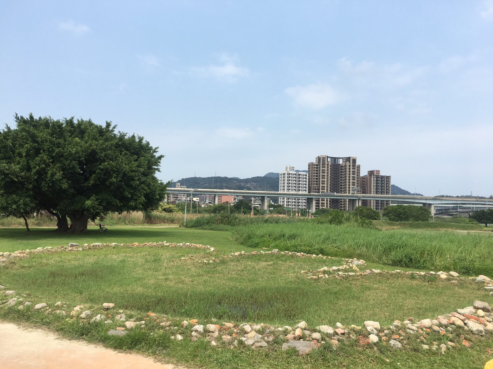
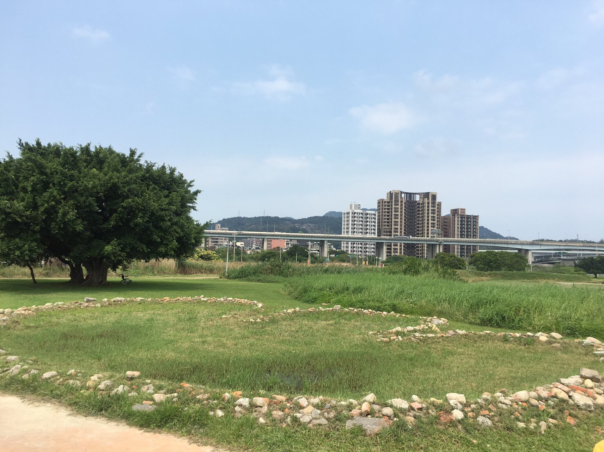

萍逢草圖騰
我們曾經拜訪過新屋永安的石滬，在五股溼地我們發現了這個圖騰，它的工法類似石滬，用廢棄的磚塊及石頭堆砌而成，讓我們一起來探索它吧！
五股溼地
我們曾經拜訪過新屋永安的石滬，在五股溼地我們發現了這個圖騰，它的工法類似石滬，用廢棄的磚塊及石頭堆砌而成，讓我們一起來探索它吧！
2004年，當時的台北縣政府成立「五股濕地生態園區」，交由荒野保護協會認養做棲地的管理。又在2017年10月時，為營造水鳥灘地而挖地，將挖出來的廢棄磚塊及石頭堆砌了象徵荒野精神的台灣萍蓬草，強調荒野守護大自然的決心。
從園藝學家的角度來看，台灣萍蓬草也是世界所有的萍蓬草中最美麗的一種，因為它金黃的花瓣中有著鮮紅色的花心，而且台灣萍蓬草是台灣溼地植物中最著名的一種，對台灣島尤其別具意義。萍蓬草屬於溫帶性水生植物，主要分布在北美洲及歐亞大陸北部，而台灣萍蓬草是世界萍蓬草分布的南限，是冰河期遺留在台灣的孑遺植物。
更難得的是，因為候鳥，特別是雁鴨的遷移，水生植物總被廣泛傳播，因此在世界各地少有特有種的水生植物，但台灣萍蓬草卻是台灣特有種，頗引起國際自然學家的重視。但遺憾的是，這麼珍貴的植物卻由於不當的開發而瀕臨絕種。
創立荒野保護協會之後，創始成員希望找尋具有台灣代表性的物種做為識別標誌，因此決定以台灣萍蓬草作為協會的象徵，發展出簡化線條的logo以便運用，讓荒野保護協會的精神像台灣萍蓬草一樣，成為棲地守護的指標之一。